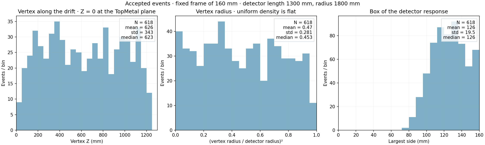
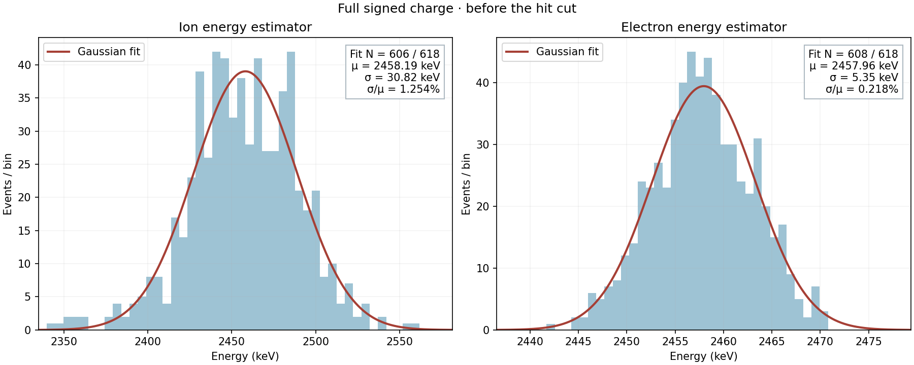
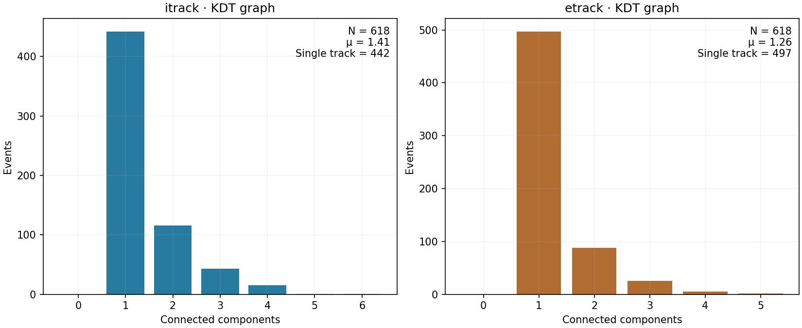
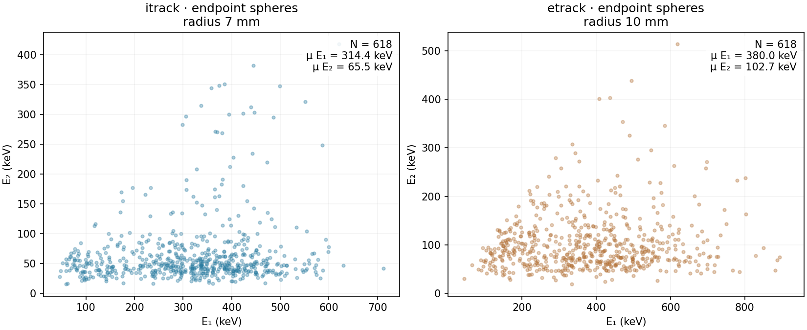

618 events; 12 event displays (one per 50). TopMetal pitch 3 mm; time buckets 20 ms. SiPM pitch 4 mm; reconstructed time buckets 5 μs.
The event stays where it was generated: ion drift is the vertex Z, electron drift the detector length minus it. The frame is a cube of 160 mm centred on the main-track box. Counts add the 10 input batches.
| Step | Events | Fraction of events read |
|---|---|---|
| Events read (after the Geant4 energy window) | 789 | 100.0% |
| Rejected: energy deposit outside the detector | 0 | 0.0% |
| Rejected: main track within 50 mm of the EL | 29 | 3.7% |
| Rejected: track larger than the frame | 1 | 0.1% |
| Rejected: frame not inside the detector | 8 | 1.0% |
| Rejected: gamma deposit above the cut outside the frame | 133 | 16.9% |
| Accepted | 618 | 78.3% |

Sum all signed reconstructed charges. Ions include CSA deconvolution; electrons include SiPM and mean attachment corrections.

Both distributions use all 618 events. Fixed itrack voxel width 3 mm and connection radius 8 mm. Etrack voxel width 4 mm and connection radius 8 mm. 442 events have one itrack component. E₁ and E₂ sum voxel energies around the endpoints of the largest component, with E₁ ≥ E₂. Itrack sphere radius: 7 mm; etrack sphere radius: 10 mm.

176 events have more than one itrack component.

Incomplete estimates are excluded: 0 ion events and 0 electron events.
Displayed hits: itrack > 5 keV; etrack > 1 keV. Positions in mm. Colour shows summed hit energy, with one colour scale shared by the three projections. Circles and spheres mark endpoint blobs. Lines follow Petit’s tree paths. Spatial limits are fixed around the tracks with 25% extra space; “Zoom to track” limits every view to a cube around the main track of both tabs (largest graph component, 10 mm or 10% margin), leaving gamma deposits outside; “Full frame” returns. Drag the 3D view to rotate.
Data: graph and plot results · reconstructed event hits and energies